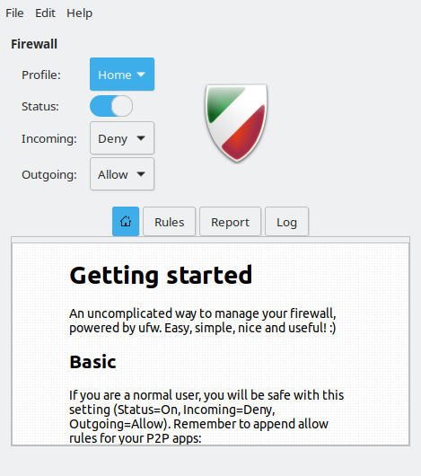
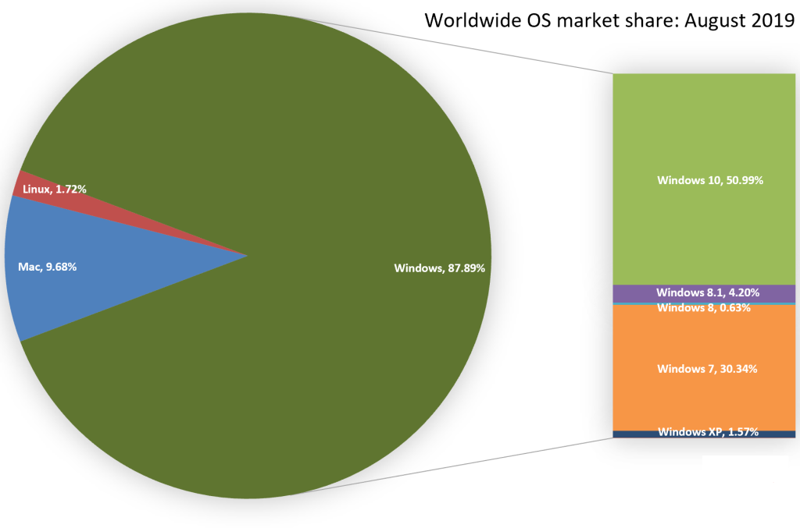

Linux is an operating system kernel (the kernel is a computer program at the core of a computer's operating system with complete control over everything in the system. It is an integral part of any operating system. It is the "portion of the operating system code that is always resident in memory"). It is one of the least used desktop operating systems right now (yes, I'm using Linux). But if it's something to consider, why do people use it less? Why should you consider it? Find out here!
Linux is secure mainly against hacking and viruses because... it's not widely used! What that means is, viruses and hackers target Windows users because it's used a lot more and there's more chance of the virus hitting their target. Not to say Windows is insecure, though. Microsoft is doing their best to provide good security. Here's an analogy: You have to shoot one of two targets. One is a lot bigger and one is a lot smaller. Whichever you shoot, you get the same outcome. So, you would rather shoot the bigger target, because there's more chance of hitting it. That's what viruses and hackers would choose, too. Linux is the small target, while Windows is the bigger one.
Linux works on almost anything! There's even a toaster that runs on Linux. Linux is faster because Linux usually has a lot lesser/smaller background services than Windows. Background services are the programs that don't have any content that is supposed to be shown to you, and they do tasks like reporting errors.

Linux has a large variety of "distros", which are actually just operating systems with the Linux kernel. So, you can choose whichever distro you like (in case you want to know, I'm using Kubuntu).

Linux also has a variety of Desktop Environments, which have different features and look-and-feels. (Kubuntu uses the KDE Plasma Desktop Environment).
There are a few more positives, but I've covered the bigger ones here. Now let's see why Linux isn't popular.
Linux is definetely something to consider, but it isn't popular. This is because it just hasn't gained momentum yet, and also because computers usually come pre-installed with Windows and people don't want to take the effort to switch over.
The only problem about Linux (in my opinion!) is the compatibility. This means that some Windows files won't work in Linux, and also that Linux doesn't have many applications.